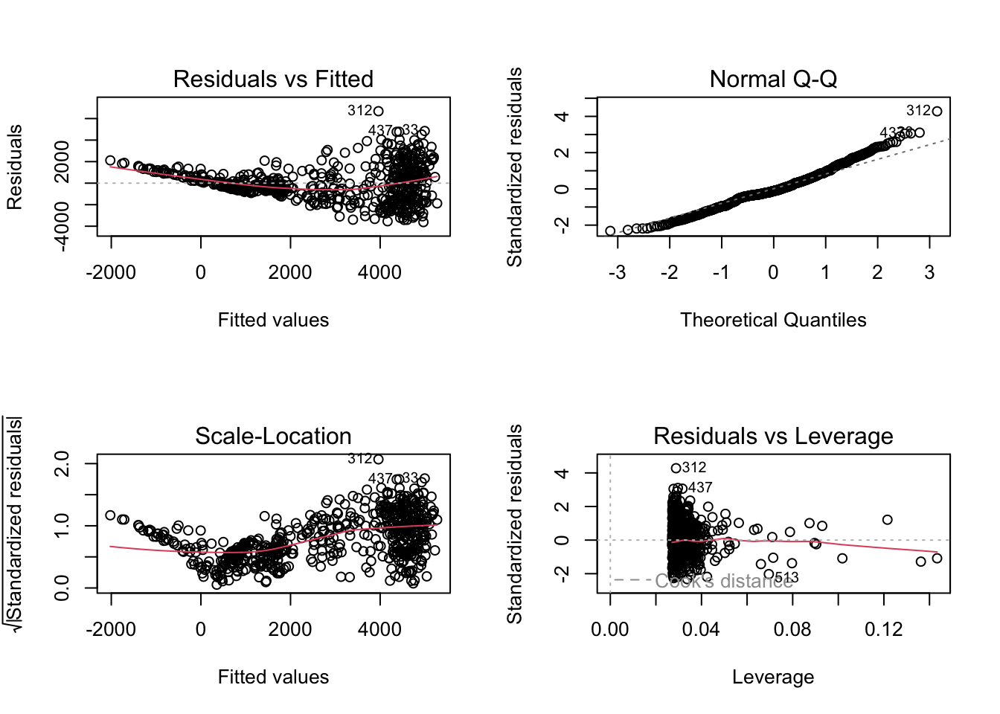

Regression
library(tidyverse)
library(readxl)
library(car)url_2012 = "https://raw.githubusercontent.com/YijiaJiang/p8105_final_project_data/main/rat_2012.csv"
rat_2012 = read_csv(url(url_2012))
url_2013 = "https://raw.githubusercontent.com/YijiaJiang/p8105_final_project_data/main/rat_2013.csv"
rat_2013 = read_csv(url(url_2013))
url_2014 = "https://raw.githubusercontent.com/YijiaJiang/p8105_final_project_data/main/rat_2014.csv"
rat_2014 = read_csv(url(url_2014))
url_2015 = "https://raw.githubusercontent.com/YijiaJiang/p8105_final_project_data/main/rat_2015.csv"
rat_2015 = read_csv(url(url_2015))
url_2016 = "https://raw.githubusercontent.com/YijiaJiang/p8105_final_project_data/main/rat_2016.csv"
rat_2016 = read_csv(url(url_2016))
url_2017 = "https://raw.githubusercontent.com/YijiaJiang/p8105_final_project_data/main/rat_2017.csv"
rat_2017 = read_csv(url(url_2017))
url_2018 = "https://raw.githubusercontent.com/YijiaJiang/p8105_final_project_data/main/rat_2018.csv"
rat_2018 = read_csv(url(url_2018))
url_2019 = "https://raw.githubusercontent.com/YijiaJiang/p8105_final_project_data/main/rat_2019.csv"
rat_2019 = read_csv(url(url_2019))
url_2020 = "https://raw.githubusercontent.com/YijiaJiang/p8105_final_project_data/main/rat_2020.csv"
rat_2020 = read_csv(url(url_2020))
url_2021 = "https://raw.githubusercontent.com/YijiaJiang/p8105_final_project_data/main/rat_2021.csv"
rat_2021 = read_csv(url(url_2021)) rat = bind_rows(rat_2012, rat_2013, rat_2014, rat_2015, rat_2016, rat_2017, rat_2018, rat_2019, rat_2020, rat_2021) %>%
select(-...1) %>%
mutate(inspection_month_n = case_when(inspection_month == "Jan" ~ 1,
inspection_month == "Feb" ~ 2,
inspection_month == "Mar" ~ 3,
inspection_month == "Apr" ~ 4,
inspection_month == "May" ~ 5,
inspection_month == "Jun" ~ 6,
inspection_month == "Jul" ~ 7,
inspection_month == "Aug" ~ 8,
inspection_month == "Sep" ~ 9,
inspection_month == "Oct" ~ 10,
inspection_month == "Nov" ~ 11,
inspection_month == "Dec" ~ 12)) %>%
mutate(date = paste(inspection_year, inspection_month_n, inspection_day, sep = "-")) %>%
mutate(date = as.Date(date,format = "%Y-%m-%d")) %>%
mutate(inspection_ym = paste(inspection_year, inspection_month_n, sep = "-")) %>%
mutate(covid_yn = case_when(date < "2020-02-29" ~ 0,
TRUE ~ 1)) %>%
separate(inspection_time, into = c("hour", "minute", "second")) %>%
mutate(hour = as.numeric(hour)) %>%
mutate(inspection_daytime = case_when(
hour < 6 | hour >= 18 ~ "Night",
hour >= 6 & hour < 12 ~ "Morning",
hour >= 12 & hour < 18 ~ "Afternoon"))
#%>% filter(result != "Passed")Variable selection
cases = rat %>%
select(borough, inspection_ym, inspection_month, covid_yn, prcp, snow, snwd, tmin, tmax) %>%
group_by(inspection_ym, borough) %>%
add_count(borough, inspection_ym, name = "borough_monthly_cases") %>%
select(-prcp, -snow, -snwd, -tmin, -tmax)
rat_tidy = rat %>%
select(borough, inspection_ym, inspection_month, covid_yn, prcp, snow, snwd, tmin, tmax) %>%
mutate(borough = as.factor(borough),
inspection_month = as.factor(inspection_month),
covid_yn = as.factor(covid_yn),
prcp = as.numeric(prcp),
snow = as.numeric(snow),
snwd = as.numeric(snwd),
tmin = as.numeric(tmin),
tmax = as.numeric(tmax)) %>%
group_by(inspection_ym, borough) %>% summarise(avg_prcp = mean(prcp),
avg_snow = mean(snow),
avg_snwd = mean(snwd),
avg_tmin = mean(tmin),
avg_tmax = mean(tmax))
cases_borough_monthly = merge(x = rat_tidy, y = cases, by = c("inspection_ym", "borough")) %>% distinct() Linear Regression Model
model_linear_original = lm(borough_monthly_cases ~ inspection_month + borough + covid_yn + avg_prcp + avg_snwd + avg_tmax, data = cases_borough_monthly)
broom::tidy(model_linear_original) %>%
knitr::kable()| term | estimate | std.error | statistic | p.value |
|---|---|---|---|---|
| (Intercept) | 4912.342411 | 690.948650 | 7.1095622 | 0.0000000 |
| inspection_monthAug | -23.708624 | 574.662667 | -0.0412566 | 0.9671056 |
| inspection_monthDec | -408.948839 | 447.000465 | -0.9148734 | 0.3606389 |
| inspection_monthFeb | -168.250123 | 465.504627 | -0.3614360 | 0.7179054 |
| inspection_monthJan | -1021.170949 | 530.735292 | -1.9240683 | 0.0548359 |
| inspection_monthJul | -292.080367 | 617.836291 | -0.4727472 | 0.6365717 |
| inspection_monthJun | -127.480948 | 502.936261 | -0.2534734 | 0.7999924 |
| inspection_monthMar | 108.521903 | 376.831554 | 0.2879852 | 0.7734611 |
| inspection_monthMay | -193.266177 | 395.555234 | -0.4885947 | 0.6253137 |
| inspection_monthNov | -650.755314 | 361.284008 | -1.8012292 | 0.0721869 |
| inspection_monthOct | -527.194309 | 338.132663 | -1.5591345 | 0.1195109 |
| inspection_monthSep | -343.007542 | 472.702153 | -0.7256314 | 0.4683579 |
| boroughBrooklyn | -198.368456 | 204.624897 | -0.9694248 | 0.3327380 |
| boroughManhattan | 233.942665 | 203.727748 | 1.1483103 | 0.2513147 |
| boroughQueens | -2998.955115 | 204.860151 | -14.6390359 | 0.0000000 |
| boroughStaten Island | -3859.731482 | 204.772334 | -18.8488914 | 0.0000000 |
| covid_yn | -1719.833539 | 171.610234 | -10.0217423 | 0.0000000 |
| avg_prcp | 36.227201 | 28.719671 | 1.2614072 | 0.2076701 |
| avg_snwd | -9.809817 | 2.585363 | -3.7943671 | 0.0001636 |
| avg_tmax | -9.622663 | 38.201008 | -0.2518955 | 0.8012112 |
summary(model_linear_original)FALSE
FALSE Call:
FALSE lm(formula = borough_monthly_cases ~ inspection_month + borough +
FALSE covid_yn + avg_prcp + avg_snwd + avg_tmax, data = cases_borough_monthly)
FALSE
FALSE Residuals:
FALSE Min 1Q Median 3Q Max
FALSE -3616.5 -832.7 -181.4 865.6 6683.1
FALSE
FALSE Coefficients:
FALSE Estimate Std. Error t value Pr(>|t|)
FALSE (Intercept) 4912.342 690.949 7.110 3.44e-12 ***
FALSE inspection_monthAug -23.709 574.663 -0.041 0.967106
FALSE inspection_monthDec -408.949 447.000 -0.915 0.360639
FALSE inspection_monthFeb -168.250 465.505 -0.361 0.717905
FALSE inspection_monthJan -1021.171 530.735 -1.924 0.054836 .
FALSE inspection_monthJul -292.080 617.836 -0.473 0.636572
FALSE inspection_monthJun -127.481 502.936 -0.253 0.799992
FALSE inspection_monthMar 108.522 376.832 0.288 0.773461
FALSE inspection_monthMay -193.266 395.555 -0.489 0.625314
FALSE inspection_monthNov -650.755 361.284 -1.801 0.072187 .
FALSE inspection_monthOct -527.194 338.133 -1.559 0.119511
FALSE inspection_monthSep -343.008 472.702 -0.726 0.468358
FALSE boroughBrooklyn -198.368 204.625 -0.969 0.332738
FALSE boroughManhattan 233.943 203.728 1.148 0.251315
FALSE boroughQueens -2998.955 204.860 -14.639 < 2e-16 ***
FALSE boroughStaten Island -3859.731 204.772 -18.849 < 2e-16 ***
FALSE covid_yn -1719.834 171.610 -10.022 < 2e-16 ***
FALSE avg_prcp 36.227 28.720 1.261 0.207670
FALSE avg_snwd -9.810 2.585 -3.794 0.000164 ***
FALSE avg_tmax -9.623 38.201 -0.252 0.801211
FALSE ---
FALSE Signif. codes: 0 '***' 0.001 '**' 0.01 '*' 0.05 '.' 0.1 ' ' 1
FALSE
FALSE Residual standard error: 1585 on 579 degrees of freedom
FALSE Multiple R-squared: 0.5883, Adjusted R-squared: 0.5747
FALSE F-statistic: 43.54 on 19 and 579 DF, p-value: < 2.2e-16#model_linear = step(model_linear_original, direction = "backward")
#broom::tidy(model_linear) %>%
# knitr::kable()
#summary(model_linear)Model diagnostics
set.seed(100)
par(mfrow=c(2,2))
plot(model_linear_original)
anova(model_linear_original)FALSE Analysis of Variance Table
FALSE
FALSE Response: borough_monthly_cases
FALSE Df Sum Sq Mean Sq F value Pr(>F)
FALSE inspection_month 11 41484669 3771334 1.5020 0.1264
FALSE borough 4 1726619254 431654814 171.9096 < 2.2e-16 ***
FALSE covid_yn 1 260013862 260013862 103.5524 < 2.2e-16 ***
FALSE avg_prcp 1 6558968 6558968 2.6122 0.1066
FALSE avg_snwd 1 42272292 42272292 16.8352 4.662e-05 ***
FALSE avg_tmax 1 159323 159323 0.0635 0.8012
FALSE Residuals 579 1453834829 2510941
FALSE ---
FALSE Signif. codes: 0 '***' 0.001 '**' 0.01 '*' 0.05 '.' 0.1 ' ' 1outlierTest(model_linear_original)## rstudent unadjusted p-value Bonferroni p
## 312 4.345301 1.6431e-05 0.0098424durbinWatsonTest(model_linear_original)## lag Autocorrelation D-W Statistic p-value
## 1 0.3309326 1.335503 0
## Alternative hypothesis: rho != 0vif(model_linear_original)## GVIF Df GVIF^(1/(2*Df))
## inspection_month 34.855515 11 1.175177
## borough 1.005925 4 1.000739
## covid_yn 1.045793 1 1.022640
## avg_prcp 1.202117 1 1.096411
## avg_snwd 1.672248 1 1.293154
## avg_tmax 26.955318 1 5.191851Logistic Regression Model
We set the Result variable as the binary outcome. Passed(0) means none was inspected.
rat_binary = rat %>%
select(result, borough, inspection_month, inspection_daytime, covid_yn, prcp, snow, snwd, tmin, tmax) %>%
mutate(inspection_result = case_when(
result == "Passed" ~ 0,
TRUE ~ 1)) %>%
mutate(inspection_result = as.factor(inspection_result),
borough = as.factor(borough),
covid_yn = as.factor(covid_yn),
inspection_month = as.factor(inspection_month),
inspection_daytime = as.factor(inspection_daytime),
prcp = as.numeric(prcp),
snow = as.numeric(snow),
snwd = as.numeric(snwd),
tmin = as.numeric(tmin),
tmax = as.numeric(tmax)) %>%
distinct()model_logit_original = glm(inspection_result ~ inspection_month + borough + covid_yn + inspection_daytime + prcp + snow + snwd + tmin, data = rat_binary, family="binomial")
model_logit = step(model_logit_original, direction = "backward")## Start: AIC=97187.13
## inspection_result ~ inspection_month + borough + covid_yn + inspection_daytime +
## prcp + snow + snwd + tmin
##
## Df Deviance AIC
## - inspection_month 11 97156 97180
## - tmin 1 97141 97185
## - snow 1 97142 97186
## <none> 97141 97187
## - prcp 1 97146 97190
## - snwd 1 97155 97199
## - inspection_daytime 2 97166 97208
## - covid_yn 1 97183 97227
## - borough 4 97993 98031
##
## Step: AIC=97180.32
## inspection_result ~ borough + covid_yn + inspection_daytime +
## prcp + snow + snwd + tmin
##
## Df Deviance AIC
## - tmin 1 97158 97180
## - snow 1 97158 97180
## <none> 97156 97180
## - prcp 1 97161 97183
## - snwd 1 97170 97192
## - inspection_daytime 2 97181 97201
## - covid_yn 1 97196 97218
## - borough 4 98007 98023
##
## Step: AIC=97179.83
## inspection_result ~ borough + covid_yn + inspection_daytime +
## prcp + snow + snwd
##
## Df Deviance AIC
## - snow 1 97159 97179
## <none> 97158 97180
## - prcp 1 97163 97183
## - snwd 1 97171 97191
## - inspection_daytime 2 97182 97200
## - covid_yn 1 97199 97219
## - borough 4 98009 98023
##
## Step: AIC=97179.01
## inspection_result ~ borough + covid_yn + inspection_daytime +
## prcp + snwd
##
## Df Deviance AIC
## <none> 97159 97179
## - prcp 1 97165 97183
## - snwd 1 97173 97191
## - inspection_daytime 2 97184 97200
## - covid_yn 1 97200 97218
## - borough 4 98010 98022broom::tidy(model_logit) %>%
knitr::kable()| term | estimate | std.error | statistic | p.value |
|---|---|---|---|---|
| (Intercept) | 1.2790394 | 0.0193928 | 65.9545046 | 0.0000000 |
| boroughBrooklyn | -0.0051652 | 0.0234838 | -0.2199475 | 0.8259120 |
| boroughManhattan | -0.0487682 | 0.0236494 | -2.0621370 | 0.0391947 |
| boroughQueens | -0.2777292 | 0.0249150 | -11.1470549 | 0.0000000 |
| boroughStaten Island | -0.7026702 | 0.0276150 | -25.4452509 | 0.0000000 |
| covid_yn1 | -0.1415041 | 0.0219299 | -6.4525569 | 0.0000000 |
| inspection_daytimeMorning | 0.0797766 | 0.0161027 | 4.9542491 | 0.0000007 |
| inspection_daytimeNight | 0.0416545 | 0.0426857 | 0.9758404 | 0.3291435 |
| prcp | -0.0019379 | 0.0008026 | -2.4144076 | 0.0157608 |
| snwd | -0.0008454 | 0.0002263 | -3.7364405 | 0.0001866 |
summary(model_logit)##
## Call:
## glm(formula = inspection_result ~ borough + covid_yn + inspection_daytime +
## prcp + snwd, family = "binomial", data = rat_binary)
##
## Deviance Residuals:
## Min 1Q Median 3Q Max
## -1.7819 0.6763 0.7008 0.7357 1.1420
##
## Coefficients:
## Estimate Std. Error z value Pr(>|z|)
## (Intercept) 1.2790394 0.0193928 65.955 < 2e-16 ***
## boroughBrooklyn -0.0051652 0.0234838 -0.220 0.825912
## boroughManhattan -0.0487682 0.0236494 -2.062 0.039195 *
## boroughQueens -0.2777292 0.0249150 -11.147 < 2e-16 ***
## boroughStaten Island -0.7026702 0.0276150 -25.445 < 2e-16 ***
## covid_yn1 -0.1415041 0.0219299 -6.453 1.10e-10 ***
## inspection_daytimeMorning 0.0797766 0.0161027 4.954 7.26e-07 ***
## inspection_daytimeNight 0.0416545 0.0426857 0.976 0.329144
## prcp -0.0019379 0.0008026 -2.414 0.015761 *
## snwd -0.0008454 0.0002263 -3.736 0.000187 ***
## ---
## Signif. codes: 0 '***' 0.001 '**' 0.01 '*' 0.05 '.' 0.1 ' ' 1
##
## (Dispersion parameter for binomial family taken to be 1)
##
## Null deviance: 98083 on 88587 degrees of freedom
## Residual deviance: 97159 on 88578 degrees of freedom
## AIC: 97179
##
## Number of Fisher Scoring iterations: 4anova(model_logit)## Analysis of Deviance Table
##
## Model: binomial, link: logit
##
## Response: inspection_result
##
## Terms added sequentially (first to last)
##
##
## Df Deviance Resid. Df Resid. Dev
## NULL 88587 98083
## borough 4 842.19 88583 97241
## covid_yn 1 38.23 88582 97202
## inspection_daytime 2 24.51 88580 97178
## prcp 1 5.34 88579 97173
## snwd 1 13.51 88578 97159set.seed(100)
par(mfrow=c(2,2))
plot(model_logit)
anova(model_logit)FALSE Analysis of Deviance Table
FALSE
FALSE Model: binomial, link: logit
FALSE
FALSE Response: inspection_result
FALSE
FALSE Terms added sequentially (first to last)
FALSE
FALSE
FALSE Df Deviance Resid. Df Resid. Dev
FALSE NULL 88587 98083
FALSE borough 4 842.19 88583 97241
FALSE covid_yn 1 38.23 88582 97202
FALSE inspection_daytime 2 24.51 88580 97178
FALSE prcp 1 5.34 88579 97173
FALSE snwd 1 13.51 88578 97159Merge with Covid-19
url_covid = "https://raw.githubusercontent.com/YijiaJiang/p8105_final_project_data/main/rat_weather_covid.csv"
rat_covid = read_csv(url_covid)## New names:
## Rows: 155451 Columns: 26
## ── Column specification
## ───────────────────────────────────────── Delimiter: "," chr
## (8): inspection_month, borough, inspection_type, block, lot,
## street_na... dbl (16): ...1, inspection_year, inspection_day,
## boro_code, zip_code, latit... time (2): inspection_time,
## approved_time
## ℹ Use `spec()` to retrieve the full column specification for
## this data. ℹ Specify the column types or set `show_col_types =
## FALSE` to quiet this message.
## • `` -> `...1`rat_covid = rat_covid %>%
mutate(inspection_month_n = case_when(inspection_month == "Jan" ~ 1,
inspection_month == "Feb" ~ 2,
inspection_month == "Mar" ~ 3,
inspection_month == "Apr" ~ 4,
inspection_month == "May" ~ 5,
inspection_month == "Jun" ~ 6,
inspection_month == "Jul" ~ 7,
inspection_month == "Aug" ~ 8,
inspection_month == "Sep" ~ 9,
inspection_month == "Oct" ~ 10,
inspection_month == "Nov" ~ 11,
inspection_month == "Dec" ~ 12)) %>%
mutate(date = paste(inspection_year, inspection_month_n, inspection_day, sep = "-"))%>%
mutate(date = as.Date(date,format = "%Y-%m-%d"))